Easter eggs
- Why? Why?! WHY?! - Embracing the futility of life's questions in the Improbable Ceramics event
- My circuits hurt. - Same option for machine empires
Easter eggs are inside jokes and references to popular culture, included for the player's amusement. This is a non-exhaustive list of Easter eggs present in Stellaris. For others, also see the TVTropes page.
The Blorg

During the pre-release stream series former Stellaris game director Wiz was inspired by one of the fungoid portraits to create a very friendly but hideously ugly species called the Blorg. The Blorg Commonality was a fanatic xenophile misunderstood empire that desperately wanted to make friends, and also had a militarist side in order to force others to be their friends if everyone rejected them. Due to fan requests, the empire was included in the game at launch, together with the Fanatic Befrienders AI personality, unique only to the Blorg and any empire with the exact same ethics and traits.
The Blorg became something of an inside joke within the game. The xenophile advisor references to the Blorg as friendly, the Subdermal Stimulation tech shows a Blorg body-pillow, the Chemical Bliss drugs it unlocks include Blorg bodily fluids, and the Uncanny trait (which describes machines made in the image of one of the most horrific species in the universe) shows a robotic Blorg. Finally, a possible name for black hole systems is Blorg's Bane.
Species with the Blorg portrait have a 1 in 140 chance to say "Umm...friends?" instead of regular fungoid sounds when contacted via the Contacts menu.
Mercedes Romero
Mercedes Romero was a Blorg scientist from the pre-release dev livestreams who proved to be very popular on the forums. When she died of old age in one of the streams, the devs re-named Earth "Mercedia" in her honor and one of the soundtracks is called "In Memory of Mercedes Romero". She was eventually added as a renowed paragon in the  Astral Planes DLC.
Astral Planes DLC.
Collectivism and Individualism
Before the 1.5 patch Stellaris featured two additional ethics: Collectivist and Individualist. In patch 1.5 they were replaced by the  Authoritarian and
Authoritarian and  Egalitarian ethics respectively. Those ethics were very controversial and the source of many long-lasting forum arguments about their morality and thus were replaced with the more carefully-designed ethics present in the current version.
Egalitarian ethics respectively. Those ethics were very controversial and the source of many long-lasting forum arguments about their morality and thus were replaced with the more carefully-designed ethics present in the current version.
Those two ethics and the arguments they brought are referenced in an anomaly event describing how a primitive civilization destroyed itself after an ideological schism over the definitions and morality of collectivism and individualism. One of the dialogue options is Those aren't even real ethics..., referencing how they're no longer present in the game.
Fallen Empires
The Fallen Empires are inspired by the Vorlons and the Shadows from Babylon 5 with their ancient technology, dogmatic focus on a single ethic and millennia of stagnation that eventually allow the younger races to catch up and surpass them.
The War in Heaven, named after a biblical event from the Book of Revelation, is also a reference to the Second Shadow War in the series Babylon 5. Humanity is caught in the middle of a war between two ancient forces: the awakened Shadows and their ancient rival - the Vorlon Empire. Humanity led the Army of Light opposing both ancients, by allying with the League of Non-Aligned Worlds and the Minbari Federation.
The achievement  Last, Best Hope also refers to a line repeatedly said within the show that the eponymous station was the last, best hope for peace, and formed the aforementioned League of Non-Aligned Worlds. The achievement requires leading the said league to victory against both Awakened Empires.
Last, Best Hope also refers to a line repeatedly said within the show that the eponymous station was the last, best hope for peace, and formed the aforementioned League of Non-Aligned Worlds. The achievement requires leading the said league to victory against both Awakened Empires.
When a Fallen Empire awakens the dialogue box also repeats a line from the series: Giants in the playground....
Furthermore, the name references Warhammer 40,000 as well, where the "War in Heaven" is an ancient event involving a conflict between the fallen empires of the Old Ones and the C'Tan plus their scions Necrontyr, the latter from which the Necron ultimately emerged.
The Hitchhiker's Guide to the Galaxy
Stellaris contains a number of references to the Hitchhiker's Guide to the Galaxy novel series. More importantly though, the actual book is present in the game. One of the anomaly events from the  Distant Stars DLC called Honeymooners leads to the discovery of the "alien travel guide", identically named The Hitchhiker's Guide to the Galaxy, which supposedly describes "many sights and phenomena still unknown to us".
Distant Stars DLC called Honeymooners leads to the discovery of the "alien travel guide", identically named The Hitchhiker's Guide to the Galaxy, which supposedly describes "many sights and phenomena still unknown to us". 
 Xenophile and
Xenophile and 
 Xenophobe empires can use it to boost their respective ethics' attraction for 10 years.
Xenophobe empires can use it to boost their respective ethics' attraction for 10 years.
One of the diplomacy messages when at war with a Fanatic Purifiers empire is This war will bring about an era of peace, justice, morality, culture, sport, family life, and the obliteration of all other life forms.
One of the unique systems from  Distant Stars contains a species called Prikki-Ti, which is sealed on their Shielded world inside a time warp and will become a Fanatic Purifier empire if they manage to get out alone or with player intervention. They are a reference to the Krikkit species from the third novel, which fails to exterminate all other life in the galaxy and gets sealed that way.
Distant Stars contains a species called Prikki-Ti, which is sealed on their Shielded world inside a time warp and will become a Fanatic Purifier empire if they manage to get out alone or with player intervention. They are a reference to the Krikkit species from the third novel, which fails to exterminate all other life in the galaxy and gets sealed that way.
In  Apocalypse if Earth is shattered with a World Cracker there is a 50% chance of creating a wormhole in the system leading to another newly created wormhole, something that also happens in the novels.
Apocalypse if Earth is shattered with a World Cracker there is a 50% chance of creating a wormhole in the system leading to another newly created wormhole, something that also happens in the novels.
Government
 Barbaric Despoilers
Barbaric Despoilers- Reference to Abaddon the Despoiler from Warhammer 40000. The logo is also very similar to the star of Chaos.
 Citizen Service
Citizen Service- Reference to Federal Service from Starship Troopers (originally a novel by Robert Heinlein, loosely adapted in a series of films), with similar logo to the film.
 Imperial Cult
Imperial Cult- Reference to Imperial Creed, state religion of Imperium of Man in Warhammer 40,000 with Emperor as deity.
 Fanatic Purifiers
Fanatic Purifiers- Inspired by the xenophobic Imperium of Man in Warhammer 40,000, complete with descriptions and dialogues common in the setting. Logo is very similar to badge of Deathwatch, Imperial unit especially designed to hunt aliens.
 Oppressive Autocracy
Oppressive Autocracy- Reference to Oceania from 1984 novel.
 Devouring Swarm
Devouring Swarm- Inspired by the Tyranids from Warhammer 40,000 and the Zerg from StarCraft.
 Determined Exterminator
Determined Exterminator- Reference to the genocidal robots from Terminator. In the game files the civic is even called 'terminator'.
 Driven Assimilator
Driven Assimilator- Reference to the Borg from Star Trek.
 Obsessional Directive
Obsessional Directive- Inspired by a thought experiment by philosopher Nick Bostrom called "Paperclip Maximizer".
Technologies
 Durasteel Materials
Durasteel Materials- Reference to Star Wars, where durasteel alloy is used for ship and armor construction.
 Gene Seed Purification
Gene Seed Purification- Reference to the Space Marines from Warhammer 40,000.
 Morphogenetic Field Mastery
Morphogenetic Field Mastery- The description includes the words 'cradle' and 'pharmaceutical', referencing the video game series Zero Escape in which the company Cradle Pharmaceutical covertly researches morphogenetic fields.
 Positronic AI
Positronic AI- Reference to Isaac Asimov's robot stories, as well as the sapient android character Data from Star Trek: The Next Generation.
 Plasteel Materials
Plasteel Materials- Name Plasteel was first introduced in Dune and plasteel materials are frequently used in Warhammer 40,000.
 Psi Jump Drives
Psi Jump Drives- Reference to Warp travels in Warhammer 40,000.
 Selected Lineages
Selected Lineages- Reference to Dune universe, where human leaders come from noble lineages selected and bred for milenia by Bene Geserit order.
Traditions
 Judgement Corps
Judgement Corps- Reference to Judge Dredd comics and movies series, implied by sprawling cities patrolled by individuals serving as judge, jury and enforcer.
 Never Surrender
Never Surrender- Name and more especially description of this tradition is paraphrase of famous Winston Churchill speech.
 Psi Corps
Psi Corps- Reference to same-named organization in Babylon 5. Their motto "The Psi Corps is your friend. Trust the Corps" is repeated in description of every in-game Psi Corps buildings.
 Standard Construction Templates
Standard Construction Templates- Reference to technological blueprints in Warhammer 40,000 universe.
 The Great Game
The Great Game- Cathprase to describe constant fight for influence between Chaos powers in Warhammer 40,000 universe.
 To Boldly Go
To Boldly Go- From the opening monologue of Star Trek.
Ascension Perks
 Flesh is Weak
Flesh is Weak- Battlecry of Iron Hands Space Marines from Warhammer 40,000.
 Defender of the Galaxy
Defender of the Galaxy- Reference to the Marvel comic book series Guardians of the Galaxy.
Armies
 Clone armies
Clone armies- Reference to the Star Wars prequel trilogy.
 Xenomorph armies
Xenomorph armies- Reference to the Alien franchise.
 Gene warrior armies
Gene warrior armies- Reference to the Space Marines from Warhammer 40,000, made more overt by the name of the enabling technology.
Planetary features
 BosWash Metropolitan Axis
BosWash Metropolitan Axis- Reference to William Gibson's Sprawl trilogy of cyberpunk novels, beginning with Neuromancer.
 Portal Research Area
Portal Research Area- Reference to the Doom series
 Underground Vault
Underground Vault- Reference to the vaults from Fallout
Traits
 Nerve Stapled
Nerve Stapled- Reference to the 4X game Sid Meier’s Alpha Centauri, where nerve stapling is an unspecified medical atrocity that suppresses riots.


 Towel-bearer
Towel-bearer- Reference to The Hitchhiker's Guide to the Galaxy: the major character Ford Prefect "always knows where his towel is". The event giving the trait is appropriately named Stay Calm (i.e. "don't panic"). The +42% survey speed it grants is the answer to the Ultimate Question of Life, the Universe and Everything.
 Hell's Heart
Hell's Heart- Reference to Herman Melville's novel Moby-Dick.
Strategic resources
 Living Metal
Living Metal- Possible reference to the Necrodermis from Warhammer 40,000, the substance that the Necron race's bodies and other constructs are made from.
 Zro
Zro- Reference to Element Zero from Mass Effect, though its use as a psionic-enhancing drug is far closer to the Spice from Frank Herbert's Dune
Species portraits
 Second humanoid species
Second humanoid species- Similar to the Klingons from Star Trek
 Pointy-eared humanoid species
Pointy-eared humanoid species- Similar to the Vulcans from Star Trek, the Eldar/Aeldari from Warhammer 40,000, and other "space elves" from numerous properties
 Fourth humanoid species
Fourth humanoid species- Similar to the alien character Diva Plavalaguna from the film The Fifth Element
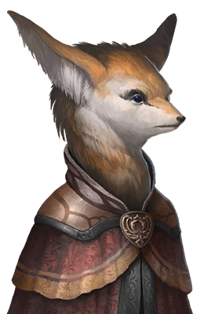
Fox mammalian species- Reference to the Star Fox series
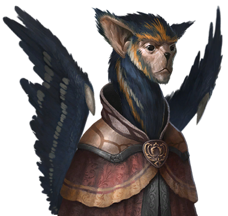
Winged mammalian species- Similar to the flying attack monkeys from The Wizard of Oz
 Fifth Reptilian species
Fifth Reptilian species- Similar to Kowakian Monkey-lizards from Star Wars
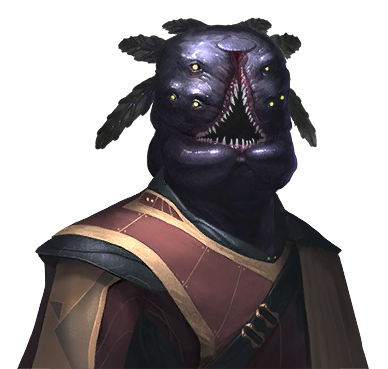
Fifth molluscoid species- Similar to the Yahg from Mass Effect
 Creatures of the Void arthropoid species
Creatures of the Void arthropoid species- Similar to the Shadows from Babylon 5
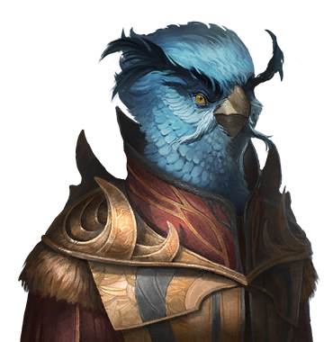
Chirpy avian species- Reference to the social media logo from the Paradox-published game Cities: Skylines
- Humanoids Species Pack
- Half of the portraits from the species pack are inspired after common fantasy races
{kind=link}
{kind=link}
{kind=link}
{kind=link}
Flags
- 14th human flag
- Reference to the United Federation of Planets from Star Trek
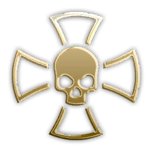
13th human flag- Reference to the Crux Terminatus badge from Warhammer 40,000
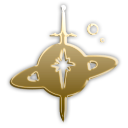
2nd domination flag- Reference to the Terran Empire from the Star Trek mirror universe
- 22nd round flag
- Reference to the Mantle of Responsibility from the video game series Halo
 3rd Lithoid flag
3rd Lithoid flag- Reference to the Ogre Kingdoms from Warhammer Fantasy
- Two of the Aquatic and Toxoids flags
- Reference to the Rorschach inkblot tests
{kind=link}
{kind=link}
{kind=link}
{kind=link}
Achievements
 Brave New World
Brave New World- Reference to Aldous Huxley's dystopian novel of the same name
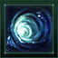
Emissary- Reference to Star Trek: Deep Space Nine
- Clever Girl
- Reference to a famous line from Jurassic Park and Total Recall
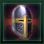
Deus Vult- "God wills it", the Christian motto from the First Crusade and a common line in Crusader Kings II
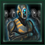
Domo Arigato- Reference to the 1983 song "Mr. Roboto" by Styx
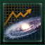
Power Overwhelming- Reference to the invulnerablity cheat code and archon quotes from the StarCraft series
 Faster, Stronger, Better
Faster, Stronger, Better- Reference to the TV series The Six Million Dollar Man
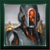
Voight-Kampff- Reference to the Philip K. Dick novel Do Androids Dream of Electric Sheep?
 Break on Through
Break on Through
{kind=link}
{kind=link}
{kind=link}
{kind=link}
{kind=link}
{kind=link}
 ...To the other side
...To the other side
- Reference to The Doors' song "Break On Through (To the Other Side)"
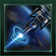
Building Better Worlds- Reference to the Weyland-Yutani company motto from the film Aliens
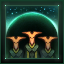
Suffer not the Alien- Reference to the motto of the Deathwatch, who excels in fighting alien threats for the Imperium of Man in Warhammer 40,000.
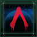
Payback- Reference to the 1983 TV series "V" where an entire fleet of a seemingly human extraterrestrial civilisation arrives in peace to offer its help to mankind. The achievement picture is an also an inverted version of the series' poster.
 Then Virgil, Now Beatrice
Then Virgil, Now Beatrice- Reference to Dante's Divine Comedy
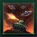
Outside Context- Reference to the Iain M. Banks book Excession. The author coined the term "Outside Context Problem" to indicate a surprising and unexpected situation, such as an invasion by massively superior alien force occuring in the middle of World War 2.
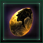
Hear me Roar- Reference to motto of House Lannister ("Hear my Roar") in "Song of Ice and Fire" novel series by G.R.R. Martin.
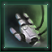
Like Tears in Rain- The title of this achievement references the famous monologue of Roy Batty from the film Blade Runner. The subtext is (also) a nod to the System Shock series of games where the main antagonist is comparing pathetic creatures of meat and bone with itself.
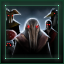
Distinctiveness Added- Reference to the Borg from Star Trek ("We will add your distinctiveness to our own").
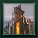
Planet of the Mechs- Reference to the Planet of the Apes series.
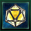
Strange Mood- Reference to strange moods in Dwarf Fortress.
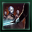
Directive 67- Reference to "Order 66" from Star Wars: Revenge of the Sith
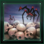
Rise of the Machines- Reference to Terminator 3: Rise of the Machines.
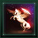
Clash of the Titans- Reference to the 1981 film Clash of the Titans.
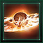
Exterminatus- Reference to an extreme course of action in Warhammer 40,000, in which forces of the Imperium of Man eliminate a threat by obliterating a planet's surface.
 Pandora's World
Pandora's World- Reference to Pandora's Box from Greek mythology. Lowering the shield also brings similarly bad results.
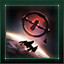
Stay on Target- Reference to Star Wars Episode IV: A New Hope.
 ...and Hope?
...and Hope?- References the Greek myth about how hope was the only thing left in Pandora's Box after it was opened
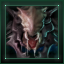
1999AD- Most likely a reference to the 1995 JRPG Chrono Trigger, as in that game a creature named Lavos falls from space and burrows down into the planet's core in the prehistoric age where it grows in size over many millennia before emerging again in the year 1999 AD, destroying the planet as it does so.
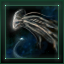
A Hump Like a Snow-Hill- Reference to Herman Melville's novel Moby-Dick.
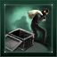
Raiders of the Lost Galatron- Reference to the film Indiana Jones and the Raiders of the Lost Ark.
 Whatever it is, I'm against it
Whatever it is, I'm against it- Reference to the song I'm Against It featured in the 1932 movie Horse Feathers.
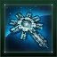
Our Fleets will Blot Out the Stars- Reference to a legendary boast of a Persian messenger at the Battle of Thermopylae in 480 BC, as reported by the Greek historian Herodotus, that "our arrows will blot out the sun". The specific translation is from the comic book series 300, a fictionalised retelling of the circumstances surrounding the battle.
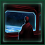
With Great Power- Reference to the famous quote "With great power comes great responsibility" said by Peter Parker in Spider-Man
 There's a Zombie on my Lawn
There's a Zombie on my Lawn- Reference to the 2009 game Plants vs. Zombies.
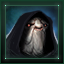
With Thunderous Applause- Reference to Star Wars Episode 3: Revenge of the Sith.
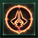
Sic Semper Tyrannis- Reference to the Latin phrase "Sic Semper tyrannis" (thus always to tyrants), supposedly said by Brutus on the day of the assassination of Julius Caesar. The phrase is also the motto of the U.S. state of Virginia and was shouted by John Wilkes Booth after his assassination of U.S. president Abraham Lincoln.
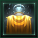
Modern Cincinnatus- Reference to Lucius Quinctius Cincinnatus, a general in the Roman Republic who was twice granted dictatorial powers by the Roman Senate to respond to a crisis and twice relinquished it as soon as the crisis had passed.
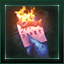
Burn Notice- Reference to USA Network show Burn Notice.
 Tinker, Tailor, Soldier, Blorg
Tinker, Tailor, Soldier, Blorg- Reference to the novel Tinker Tailor Soldier Spy by John Le Carré.
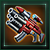
Maximally Effective- Likely a reference to the fictional book 70 Maxims of Maximally Effective Mercenaries from the Schlock Mercenary space opera webcomic series
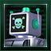
Machine Supremacy- A reference to the swedish band Machinae Supremacy.
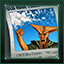
Past the Expiration Date- The achievement's art is a reference to the "Old Man Yells at Cloud" gag from the 2002 episode "The Old Man and the Key" of The Simpsons.
- This Is the Part Where We Kill You
- Reference to quote "This is the part where he kills us" and "This is the part where I kill you" from Portal 2
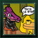
From Bad to Worse- The achievement picture reference to "This is fine." from Gunshow comic.
{kind=link}
{kind=link}
{kind=link}
{kind=link}
{kind=link}
{kind=link}
{kind=link}
{kind=link}
{kind=link}
{kind=link}
{kind=link}
{kind=link}
{kind=link}
{kind=link}
{kind=link}
{kind=link}
{kind=link}
{kind=link}
{kind=link}
{kind=link}
{kind=link}
{kind=link}
{kind=link}
{kind=link}
{kind=link}
{kind=link}
{kind=link}
{kind=link}
The Shroud
The Shroud is modeled after the Warp from Warhammer 40,000, and the Shroud entry dialogue contains plenty of references to various franchises.
Patron entities
 Composer of Strands
Composer of Strands- Inspired by the Chaos god Nurgle.
 Eater of Worlds
Eater of Worlds- Inspired by the Chaos god Khorne.
 Instrument of Desire
Instrument of Desire- Inspired by the Chaos god(dess) Slaanesh.
 Whisperers in the Void
Whisperers in the Void- Inspired by the Chaos god Tzeentch.
 Cradle of Souls
Cradle of Souls- Inspired by the minor goddess T'au'va.
- Golden Dream
- Inspired by Azathoth.
{kind=link}
Entry Lines
- "Do you think that is air you're breathing now?"
- Quote from the film The Matrix.
- "They should have sent a poet..."
- Reference to the film Contact.
- "Do you hear the voices too?"
- Unit chatter for the Chaos faction in the RTS game Warhammer 40,000: Dawn of War.
- "Horror... horror has a face."
- Quote from the film Apocalypse Now.
- "What senses do we lack that we cannot see and cannot hear another world all around us?"
- Quote from the Orange Catholic Bible from the Dune novel series by Frank Herbert.
Slavery types
- Battle Thralls
- Reference to the Ur-Quan Masters from the Star Control series.
- Grid Amalgamation
- Reference to the Matrix series. In the game files the slavery type is even called 'matrix'.
Megastructures
- Ring World
- Reference to Larry Niven's novel Ringworld. The hostile reaction of the security system in the Sanctuary system resembles events of the novel involving an asteroid defence system.
- Interstellar Assembly
- Reference to the Babylon Project from Babylon 5.
- Mega Shipyard
- Inspired by the Star Forge from the RPG Star Wars: Knights of the Old Republic.
- Strategic Coordination Center
- Possibly inspired by the Battle/Command School from the novel Ender's Game.
Endgame Crises
- The Contingency
- Reference to the Reaper cycle from Mass Effect.
- Extradimensional Invaders
- Reference to the Devidians from Star Trek: The Next Generation.
- The Prethoryn Scourge
- Inspired by the Tyranids from Warhammer 40k or Yuuzhan Vong from Star Wars.
- The Reckoning
- Possibly inspired by the Fall of the Eldar in Warhammer 40,000.
Names
Name lists
- Necroids
- Necroid 1 name list is loosely based on various British names during colonization of the North American East Coast due to the macabre stories and history of the region.
- Necroid 2 name list references ancient Egypt based on the common tropes of Egyptian culture being associated with death, inspired by their burial methods and rituals.
- Necroid 3 name list uses names based on Nahuatl language, referencing human sacrifice in Aztec culture.
- Aquatics
- Aquatic 4 name list incorporates British personal and warship names, inspired by the British Royal Navy.
- Toxoids
- All of the names found in Toxoid 3 name list appear to be inspired by names and words from the Finnish language as well as the rest of the broader Finnic language family. [1][2]
- Two of the more obvious examples include the ship names "Nauma", "Haantali" and "Pori Aahe", which are almost certainly derived from the Finnish cities of Rauma, Naantali, Pori and Raahe, respectively, while the default fleet name "Tähtaalaivasto" is almost exactly the same as "Tähtilaivasto", the Finnish word for "Star fleet".
- One of the planet names in this name list is "Harkoonlinna", which may be a reference to House Harkonnen in Frank Herbert's Dune, whose name is derived from the Finnish surname Härkönen, while the "-linna" (castle in Finnish) suffix is often found in the names of cities in Finland that evolved around castles, such as Hämeenlinna and Savonlinna.
- Minamar Specialized Industries
- Minamar Specialized Industries (MSI) uses the Roman name list (labeled "Human (SPQR)" in name list selection and "HUMAN3" in the game files).[3]
Ship names
The standard human name list used by the United Nations of Earth is loaded with references; for instance, all Destroyers are named after cities, whilst Cruisers are named after battles (Somme, Hastings, Bunker Hill) and military commanders/leaders (Julius Caesar, De Gaulle, Genghis Khan), construction ships are named for oceans and rivers (Pacific, Atlantic, Volga, Ganges, Rhine), science ships are named for explorers and scientists (Grissom, Gagarin, Asimov, Hawking), and so on.
- Enterprise (battleship)
- The main ship featured in most Star Trek series and films.
- Firefly (corvette)
- Reference to the TV series Firefly, named for the ship class of the featured ship Serenity.
- Greased Lightning (corvette)
- Reference to the film musical Grease.
- Serenity (colonizer)
- Reference to the TV series Firefly (and spin-off film Serenity), whose featured ship is named Serenity.
- Thunder Child (destroyer)
- Reference to War of the Worlds.
- Yeager
- Reference to Chuck Yeager, the first person to travel past the speed of sound.
- Maidenless Tarnished
- Reference to Elden Ring
Pirate ship names
Aside from pop culture references, many pirate ship names are reminiscent of the naming conventions of Culture starships, from Iain M. Banks' fictional setting.
- The Slings, The Arrows, and Outrageous Fortune
- Reference to Shakespeare's play Hamlet.
- Black Earl
- Reference to Black Pearl from the Pirates of the Caribbean series.
- Attack on Freighter
- Reference to the manga series Attack on Titan.
- Tycho, Durandal, Leela
- Reference to the FPS series Marathon, namely the eponymous colony ship's three shipboard AIs.
- Oh, That's a Pirate!
- Reference to a video game in Part 3 of the anime series JoJo's Bizarre Adventure.
- Soylent Green
- Reference to the film of the same name.
- Resonance Cascade
- Reference to the game Half-Life.
- Hell's Bells
- Reference to the song by AC/DC.
- Pillage and Reconciliation
- Reference to the ship "Truth and Reconciliation" from the video game Halo: Combat Evolved.
- Comet Sighted!
- Reference to the "Comet Sighted" event in various Paradox Interactive games, particularly Europa Universalis.
System names
- Alderaan, Dressel, Jabba and Lando
- All are planet or character names from Star Wars.
- Amlitzer
- Reference to the battle in the Amlitzer system in the novel series Legends of the Galactic Heroes by Yoshiki Tanaka.
- Arrakis
- The arid planet that is the primary setting for the novel Dune and its sequels, by Frank Herbert. (In universe, it is in the Canopus system.)
- Astarte
- Canaanite goddess; specifically, a reference to the battle in the Astarte system in the novel series Legends of the Galactic Heroes by Yoshiki Tanaka.
- Belgium
- Nation of Earth, present in the Victoria and Hearts of Iron series; also "the rudest word in the universe" in The Hitchhiker's Guide to the Galaxy.
- Cknoor
- Nickname of Anders "cKnoor" Carlsson, Streaming Producer at Paradox.
- Covfefe
- Nonsense word from an infamous incoherent tweet from US President Donald Trump during his first term.
- Epsilon Eridani
- Though this is a real star system, it is reference to "Babylon 5", since titular station is placed in this system.
- Eye of Hawking
- Black hole system and tribute to theoretical physicist Stephen Hawking; the name was added in the first patch after his death. He famously proved theoretically that black holes could lose mass over time.
- Giedi
- Giedi Prime is the homeworld of House Harkonnen in the novel Dune and its sequels, by Frank Herbert.
- Heegaraa
- Hiigara is the homeworld of the main faction of the titular Homeworld, by Relic Entertainment.
- Heaven's Gate
- American UFO religious millenarian group.
- Higashik-Ata
- Reference to Part 4 of JoJo's Bizarre Adventure, "Diamond is Unbreakable"; protagonist's last name.
- Hillos
- Reference to and pun of the gothic horror novel The Haunting of Hill House by Shirley Jackson. The system is "haunted" by a literal ghost ship.
- Kazon
- Reference to the Kazon tribes, an aggressive and sectarian species from Star Trek: Voyager. Dogar and Kazon are also the twin gods of Evil and Darkness in the game Star Control II: The Ur-Quan Masters.
- Kazoo
- Reference to cKnoor's kazoo, as seen in the pre-release stream.
- Kerbol
- The central star in the spaceflight simulation game Kerbal Space Program. (This is a fan term; in game it is simply "Sun".)
- Kuma
- Nickname of Björn "Kuma-kun" Iversen, Audio Director at Paradox.
- Mar-Adetta
- Reference to the Battle of Marr-Adetta in the novel series Legends of the Galactic Heroes by Yoshiki Tanaka.
- Manward
- Reference to Martin Anward, formerly Stellaris Game Director.
- Olimar
- Reference to the protagonist of the game Pikmin.
- Omicron Persei
- Though this is a real star system, it is likely also a reference to the animated TV show Futurama, where the overlord Lrrr of the Omicronians lives on Omicron Persei VIII.
- Polgara
- Reference to the sorceress Polgara of the Belgariad fantasy novel series by David Eddings.
- Rantemario
- A star system in the novel series Legends of the Galactic Heroes by Yoshiki Tanaka.
- Tammpere
- Almost identical to Tampere, the third-largest city in Finland and the most populous inland city in the Nordic countries. Paradox Interactive is from Sweden, Finland's neighbor.
- Tantanga
- The alien invader from the Game Boy game Super Mario Land.
- Targon
- Reference to Mount Targon from the setting of the MOBA game League of Legends.
- Tiamat
- Babylonian goddess; also a dragon goddess in several Dungeons & Dragons campaign settings.
- Ulm
- City in southern Germany, a state of the Holy Roman Empire in the Europa Universalis series, another grand strategy game by Paradox, used as a meme (humourously claimed to be one of the most powerful nations in the game, despite being a one-province minor).
- Vermillion
- A star system in the novel series Legends of the Galactic Heroes by Yoshiki Tanaka.
- Vohaul
- A villain (Sludge Vohaul) in the Space Quest games.
- Yildun
- Headquarters of Technodyne Industries of Yildun in the Honor Harrington series of military sci-fi novels by David Webber.
- Yump
- A joke at the expense of Game Director Martin "Wiz" Anward, for his repeated (mis)pronunciation of 'jump' as 'yump' (in relation to FTL travel) during prerelease livestreams. In the random name list (Stellaris/common/random_names/base/00_random_names.txt), it appears directly below 'Kazoo' and 'cKnoor'.
- Zeta Reticuli
- Though this is a real star system, it is likely reference to Alien movie, since most part of action is placed in this system.
Planet names
- Alpha Complex (Ring World)
- The name of the facility the tabletop RPG Paranoia takes place in, which is also taken care of by a Custodian Matrix.
- Dune (desert world)
- Another name for Arrakis from Frank Herbert's Dune series.
- Kipling (jungle world)
- Reference to Rudyard Kipling, an author famous his short story collection The Jungle Book.
- R'lyeh (ocean world)
- Reference to the sunken city from the Cthulhu mythos by H. P. Lovecraft.
- Dagon (ocean world)
- Syrian god; in this context an ocean-dwelling deity from a short story by H. P. Lovecraft.
- Walled Garden (Gaia world)
- Translation of Rannoch, the Quarian homeworld's name from Khelish, their language, in Mass Effect.
- Sol X
- As this planet can be found in different system than Sol, it is reference to theories about missing "ninth planet" in Solar System (Pluto is named Sol IX).
- Melpomenia/Solaria
- Worlds controlled by the "Spacers" in Isaac Asimov's Foundation novel series.
- Klendath II
- Reference to Klendathu from Starship Troopers.
Asteroids
- 1337- prefix
- An asteroid may get the random name 1337, which means "Leet" (elite) in leetspeak, a type of computer and Internet slang.
- AT-, R2-, C- prefixes, and -AT, -ST, -D2, -3PO suffixes
- All references to Star Wars.
- THX- prefix and -1138 suffix
- Reference to George Lucas' first movie, THX-1138. This name would appear several times in other movies made by Lucas, usually in the background or as subtle references in dialogue.
- HAL- prefix and -9000 suffix
- Reference to HAL-9000, the sentient computer in the film and novel 2001: A Space Odyssey.
- TLDR- prefix
- Relatively common internet slang; stands for "Too Long, Didn't Read".
- UL1M- prefix
- Might be a reference to the EU4 state of Ulm.
- OD1N- prefix
- Odin, of Norse mythology.
- VIR- prefix
- Likely a nod to the tutorial AI, VIR, and possibly Vir Cotto of Babylon 5.
- WPR- prefix
- Possible reference to WOPR, the military supercomputer antagonist of the 1983 film WarGames.
- LV- prefix
- Reference to LV-426, a moon in the film Alien.
Random events
- Comet sighted
- An event present in most other Paradox games.
- A Species of Ice and Ice
- Reference to the fantasy novel series A Song of Ice and Fire by George R. R. Martin.
- Anti-Alien Task Force
- Reference to the XCOM and UFO game series.
- Eddic, Monolithic
- Reference to Arthur C. Clarke's 2001: A Space Odyssey.
- Glancing Hit
- Reference to Mass Effect 2 dialogue about Sir Isaac Newton and the dangers of kinetic weapons missing their target, and subsequently traveling as long as required until they hit something.
- Improbable Ceramics
- Reference to Russell's teapot, a philosophical analogy about the burden of proof.
- Mharin Kharin
- Reference to the Marin Karin move from Megami Tensei, which charmed/brainwashed enemies and gained infamy among the fanbase for its inaccuracy and overuse by a character in Persona 3.
- Nimkip
- Reference to Pikmin, a video game developed by Nintendo.
- Olfactory Study
- Reference to Futurama's "Smell-O-Scope".
- Purple Rain
- A song by Prince.
- Rogue Agent
- Reference to James Cameron's film Avatar.
- Speed Demon
- Reference to the endings of Mass Effect 3.
- The Tree
- Reference to the iconic scene from the 2006 film The Fountain.
- Horizon Signal
- Reference to the film Event Horizon.
- The Gun Pointed at the Head of the Universe
- Word-for-word title reference to a track from the soundtrack for the first Halo game in reference to the titular Halos' function as galaxy-wide superweapons.
- Broken Union
- Reference to the Trill symbionts from Star Trek (in particular Deep Space Nine).
- MegaCorpse Concert
- Reference to the animated series Metalocalypse. The player reply also references a memetic line from the series.
- Dimension of Suffering
- Toxoid's new event and the 'fill it with rocks' option (only available to those with the Feudal Society civic) are a reference to the 'Gate to Hell' event in Crusader Kings 2. The third choice (send knight in) is a reference to Doom Eternal.
Messages
- "The galaxy is dark and full of terrors."
- Adaptation of a religious saying ("The night is dark and full of terrors") from the novel series A Song of Ice and Fire by George R. R. Martin.
- "Alert all commands. Deploy the fleet."
- Quote from Star Wars Episode V: The Empire Strikes Back.
- "I can taste your stink and every time I do, I fear that I've somehow been infected by it."
- Line spoken by Agent Smith in the film The Matrix.
- "You will embrace the greater good, eventually."
- Reference to the T'au Empire from Warhammer 40,000. The reply is only available if your ethics match the T'au's (Authoritarian, Militarist, Xenophile).
- "The spice must flow."
- Quote from the novel Dune by Frank Herbert.
- "You are a rock tricked into thinking..."
- Quote from a tweet by @daisyowl on the nature of computers.
- "What a talentless looking [fox mammalian race]."
- Reference to the Tails Gets Trolled webcomic.
- "Make it so."
- Catchphrase of Captain Jean-Luc Picard from Star Trek: The Next Generation.
- "Look at the size of that thing!"
- Reference to Star Wars Episode IV: A New Hope.
- "You may be wondering about the meaning of the mural behind us. That's a very good question with a very interesting answer! The price for the answer is 15 quadrillion Credits."
- Reference to the game Star Control.
- "The enclave is in a frisky mood. The creation of Scentilus Rift has caused many an artist to change their primary focus to creating new experiences for it."
- Reference to the Oculus Rift, the first mass-market VR headset.
- "May their reign stretch into infinity... and beyond!"
- "To infinity and beyond" is a catchphrase in the animated film Toy Story.
- "Well secluded, I see all."
- Reference to The Rocky Horror Picture Show.
- "Is Unit A5091-b in possession of a soul?"
- Reference to the Geth question from Mass Effect.
- "Wonderful! Prepare the gift baskets."
- Reference to the Disney animated film Pocahontas.
- "Brutal."
- Reference to a meme related to the animated series Metalocalypse.
- "Life, uh, finds a way."
- Quote from the film Jurassic Park.
- "My precious!"
- Quote from The Hobbit and The Lord of the Rings by J. R. R. Tolkien.
Diplomacy Messages
- "Soon, communications from all your vessels will be blocked. None of you are free of sin." (Evangelizing Zealots negative greeting)
- Reference to the Weird Twitter account @dril. ("blocked. blocked. blocked. youre all blocked. none of you are free of sin")
- "The [ruler title] Protects." (Evangelizing Zealots war greeting)
- "The Emperor protects", religious mantra of the Imperial cult in Warhammer 40,000.
- "Please notice me senpai." (Fanatical Befrienders greeting)
- Non-specific reference to Japanese anime.
- "We are the [empire name]. Lower your shields and surrender your ships." (Hive Mind war greeting)
- Line spoken by the Borg in Star Trek.
- "Our words are backed with the planet-destroying power of a Colossus!" (neutral Colossus owner greeting)
- Reference to the "nuclear Gandhi" meme from Civilization II.
- "Pray that you will never have to witness the firepower of our fully armed and operational Colossus!" (neutral Colossus owner greeting)
- Near-quote from Star Wars Episode IV: A New Hope.
Descriptions
- "Some species are more equal than others." (Caste System citizenship)
- Near-quote from George Orwell's novel Animal Farm.
- "Space is the final frontier" (Voidcraft technology field)
- Near-quote from the opening monologue of Star Trek.
- "There may come a time when intellects, vast and cool and unsympathetic, regard our worlds with envy and draw plans against us." (Planetary Defenses technology)
- Reference to H. G. Wells' novel The War of the Worlds.
- "Where we're going, we won't need skin to feel!" (Subdermal Stimulation technology)
- Near-quote from the film Event Horizon.
- "Let the enemy come to us. We shall fight them for every planet, every moon, every asteroid that lies within our space. We shall never surrender." (Defense in Depth war doctrine)
- Reference to the second of Winston Churchill's three famous speeches.
- "The swarm consumes. The world trembles. We grow." (Consume World decision)
- Reference to Starcraft II: Heart of the Swarm
- "Livestock is Pops!" (Livestock slavery description)
- Reference to the film Soylent Green.
- "We will add your biological and technological distinctiveness to our own. Your culture will adapt to service us." (Assimilation citizenship)
- Line spoken by the Borg in Star Trek: The Next Generation.
- "Glory to organics." (Bio-Trophy citizenship)
- Reference to the game NieR: Automata.
- "Assuming direct control." (Machine Integration citizenship)
- Reference to Harbinger from Mass Effect 2.
- "I am the senate." (Change Council Size to 1 resolution)
- Quote of Senator Palpatine in Star Wars Episode III: Revenge of the Sith.
- "The galaxy is vast and full of dangers." (Unyielding tradition tree)
- Reference to Stellaris' slogan "The galaxy is vast and full of wonders."
Advisors
- Militarist advisor
- Reference to the Klingons from Star Trek.
- Spiritualist advisor
- Reference to Babylon 5.
- Xenophobic advisor
- Reference to the Imperial Guard Commissars from Warhammer 40,000.
- Diplomat advisor
- Reference to the Federation from Star Trek. One of the samples says "...and hot tea", a reference to Captain Jean-Luc Picard in Star Trek: The Next Generation, whose favourite drink is "Tea, Earl Grey, hot".
- VIR (tutorial advisor)
- Click the portrait repeatedly for some funny comments, also a reference to Blizzard Entertainment games where units would have silly and often fourth-wall-breaking responses if clicked on multiple times in succession. VIR's name is possibly a reference to Vir Cotto from Babylon 5.
- Necroids advisor
- "Species modification complete" message includes the phrase "come up to the lab", a reference to the Rocky Horror Picture Show with Dr. Frank-N-Furter's song "Sweet Transvestite".
- Psionic advisor
- "Power Overwhelming" message, a reference to the invulnerablity cheat code and archon quotes from the StarCraft series
Enigmatic Observers
The Enigmatic Observers have a tendency to lean against the fourth wall in their dialogue.
- "All the world's a stage, and all the species are merely players. You are a player, are you not?"
- Neutral greeting, including a near-quote from As You Like It by William Shakespeare.
- "Don't break the fourth wall, you clever child you."
- Neutral greeting. Possible refrence to Clara Oswald from Doctor Who.
- "You have ceased to amuse. Your little game will soon be over."
- War greeting. Ironically they cannot give an empire game over unless awakened.
Leviathans
- The Infinity Sphere & Gargantua
- Reference to the film Interstellar. One possible outcome causes the system to be renamed to Pantagruel, making it also a reference to Rabelais' Gargantua and Pantagruel novel series. The damage modifier against it that can be obtained from the Curators is described as relying on a crew member "to constantly make calibrations to the ship's guns", a possible reference to Garrus Vakarian from the Mass Effect series.
- Tiyanki Matriarch and AH4B
- Reference to the novel Moby-Dick by Herman Melville. The swallowed admiral is also coded to be humanoid if the DLC is installed.
- The Shard and The Rubricator
- Reference to Smaug and the Arkenstone from The Hobbit.
Other
- Galactic Community and Galactic Imperium
- Inspired by the Galactic Republic and Galactic Empire from Star Wars. The name "imperium" also references the Imperium of Man of Warhammer 40,000.
- Imperial Crusade resolution
- Reference to military campaigns organized by Imperium of Man called "crusades".
- Despicable Neutrals (placeholder personality)
- Reference to the people of the Neutral Planet in Futurama, and possible reference to the Despicable Me film trilogy. The description (beginning "What makes a man turn neutral?") is a quote from Futurama.
- Mario and Luigi (the first two names in the Italian section of Humanoids 3 name list)
- The main protagonists of Nintendo's flagship franchise.
- Zelda (female name from Humanoid 3 name list)
- The title character from the Legend of Zelda series.
- B. Ender Odrigez (name from Individual Machine 3 name list)
- The character Bender "Bending" Rodriguez from Futurama.
- Crystalline Entities are Unbreakable (special project)
- Reference to Part 4 of JoJo's Bizarre Adventure manga, Diamond is Unbreakable.
- Chinorr Stellar Union (preset empire)
- A reference, albeit misspelled, to Paradox Studio's stream producer cKnoor.
- Strength Through Unity Coalition (Authoritarian faction)
- Reference to the Norsefire slogan of Strength through Unity, Unity through Faith from V for Vendetta.
- Age of Wonders 4
- The legendary paragon Skrand Sharpbeak and the Ancient Capital Site archaological site both allude to the Krazura race from Age of Wonders 4: Empires & Ashes expansion.
|
|
Available only with the Distant Stars DLC enabled. |
- L-Cluster Nanites
- Inspired by the replicators from Stargate: Atlantis. Gray is a reference to the theoretical concept of "gray goo", the endpoint of runway self-replication of nanomachines.
- Enigmatic Cache
- Reference to Arthur C. Clarke's Rendezvous with Rama.
|
|
Available only with the Ancient Relics DLC enabled. |
- Miniature Galaxy (relic)
- Reference to the first Men in Black film.
- Gas Giant Structure (archaeology site)
- Reference to the Titanic.
|
|
Available only with the Federations DLC enabled. |
- Never Forget (archaeology site)
- Reference to the film Blade Runner, specifically the "Tears in the Rain" monologue.
Reference
- ↑ https://www.reddit.com/r/Stellaris/comments/xd194b/a_toxoid_nameset_is_finnishinspired/
- ↑ https://twitter.com/jannepyy/status/1572288769088229378
- ↑ Found in
Stellaris/common/scripted_effects/first_contact_dlc_effects.txtunder the sectioncreate_MSI_effect.
| Exploration | Exploration • FTL • Unique systems • L-Cluster • Pre-FTL species • Fallen empire • Spaceborne aliens • Enclaves • Guardians • Marauders • Caravaneers |
| Celestial bodies | Celestial body • Colonization • Planetary features • Planet modifiers |
| Discovery | Discovery • Anomaly • Archaeological site • Astral rift • Relics • Collection |
| Species | Species • Pop modification • Biological traits • Machine traits • Population • Species rights • Ethics |
| Leaders | Leader • Common leader traits • Commander traits • Official traits • Scientist traits • Paragons |
| Governance | Empire • Origin • Government • Civics • Council • Policies • Edicts • Factions • Traditions • Ascension perks • Ambition • Situations |
| Economy | Resources • Planetary management • Districts • Jobs • Designation • Trade • Megastructures • Waystation |
| Buildings | Planet capital • Common buildings • Planet unique • Empire unique • Holdings |
| Ships | Ship • Arkship • Ship designer • Core components • Weapon components • Utility components • Mutations • Offensive mutations |
| Technology | Technology • Physics research • Society research • Engineering research |
| Diplomacy | Diplomacy • Relations • Galactic community • Federations • Subject empires • Intelligence • Contracts • AI personalities |
| Warfare | Warfare • Space warfare • Land warfare • Starbase • Crisis |
| Others | Events • The Shroud • Preset empires • AI players • Stat modifiers • Console commands • Easter eggs |